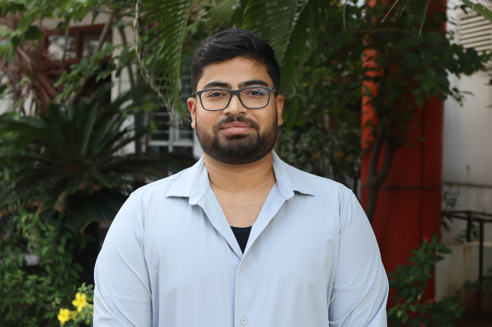

Satyam Kumar
Urban & GIS Professional
Urban professional combining policy insight, technical spatial analysis, and on-ground planning. Skilled in QGIS, GEE, Stata, R and analysis of micro-datasets (NFHS, PLFS, TUS, HCES).
Urban professional combining policy insight, technical spatial analysis, and on-ground planning. Skilled in QGIS, GEE, Stata, R and analysis of micro-datasets (NFHS, PLFS, TUS, HCES).
About
I work at the intersection of GIS, remote sensing and urban policy. I build maps, run spatial analysis in QGIS & GEE, and perform statistical analysis in R/Stata for city-level decision making. I deliver clear, reproducible workflows and map products for planners and researchers.
Contact: satyam081@gmail.com • +91 7070910065 • LinkedIn • GitHub: satyam081
Featured Projects

Walkability & SID Poster (Street Intersection Density)
Brief description available in project page.
.jpg)
Urban Heat Island (UHI) Analysis — Chandigarh
Brief description available in project page.

Image Indices Analysis (NDVI NDWI NDBI) — Chandigarh
Brief description available in project page.
Contact
For collaboration, freelance work, or queries contact me at satyam081@gmail.com or +91 7070910065.